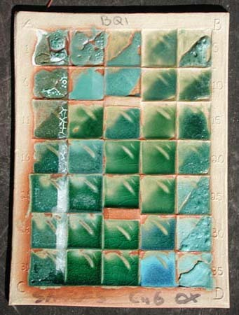

From Ian Currie:
The Grid Method is a structured way of looking at and experimenting with glazes. It is a “recipe method”, which means we do not need to have any deep knowledge of chemistry or mathematics to understand and to use it. It deals systematically with the main variables, which stated simply are:
- The glaze recipe
- The clay body
- The firing
Ian Currie’s website
http://ian.currie.to/
Stoneware Glazes (Archived Online Version)
https://web.archive.org/web/20150307164557/http://stonewareglazes.currie.to:80/book/toc
Glazes.org with description of Grid Method
http://glazes.org
Outline of the Grid Method
From the book “Revealing Glazes” by Ian Currie
http://ian.currie.to/books/revealing/chapter2/index.html
Ian Currie’s explanation of the Grid Method on the old glazes.org website
https://web-beta.archive.org/web/20100913155626/http://www.glazes.org:80/understanding-glazes/the-grid-method.html
Ian’s original online calculator
http://ian.currie.to/original/calculation_page.htm
Tom Demeranville’s Currie Grid Calculator
http://demeranville.com/pottery/curriecalc.html
Ceramics Monthly Technofile: Ian Currie’s Grid Method
John Post’s Currie Grid Tests
http://www.macomb.k12.mi.us/utica/burr/art/JohnPost-2014/main-pages/cone-6-ian-currie-grid-glazes.html